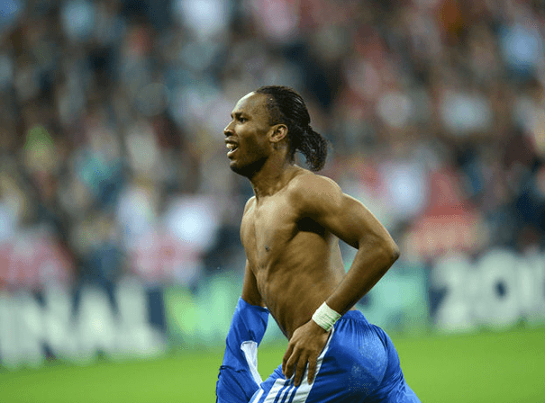
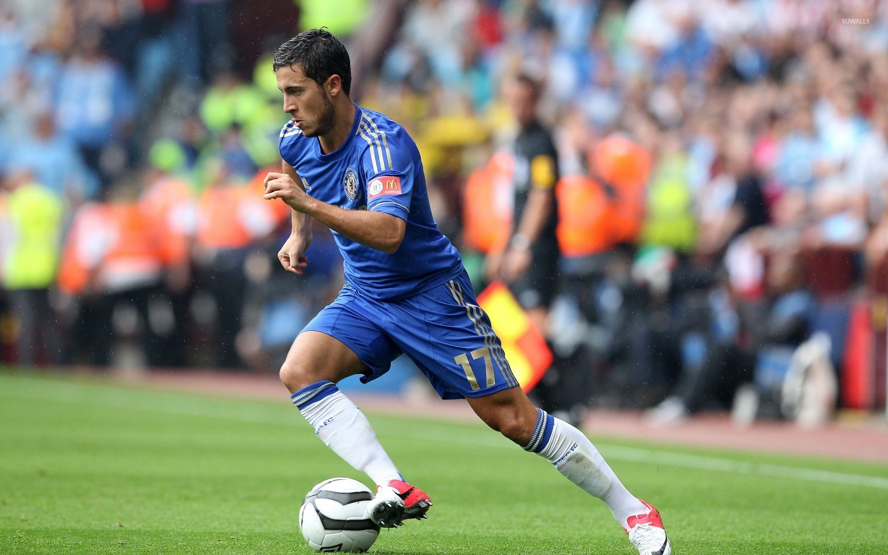
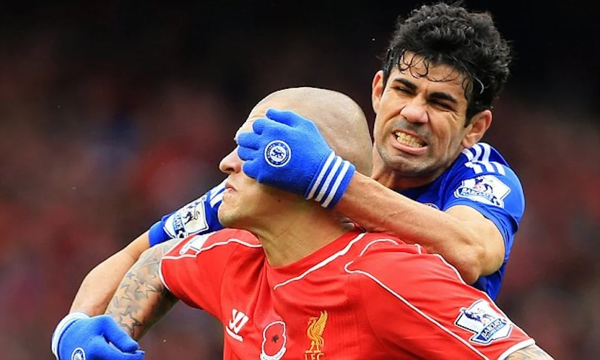
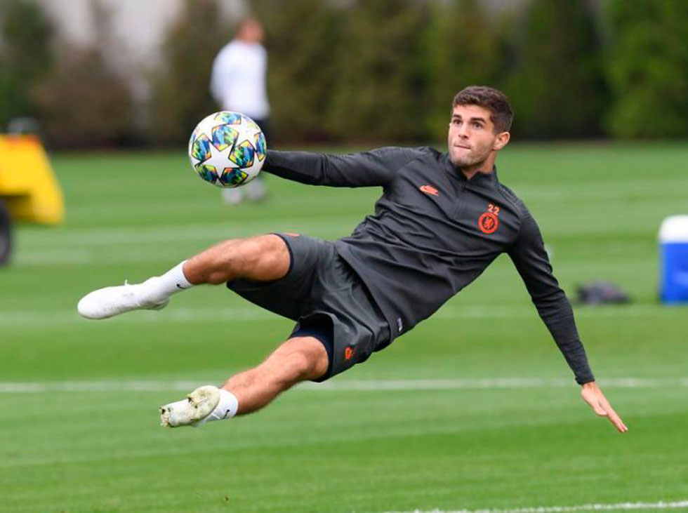

Some Chelsea players I like (both Old and New)
There are and have been so many great players at Chelsea, we will only name a few here...
Drogba

This man made me fall in love with Chelsea.... I remember watching the 2012 Champions league final in Munich,
tensions rose as the match went to penalty shoot outs. This man was at fault for the equalizer that lead to
the infamous shootout, it will interest readers to know that he also scored the last penalty delivering Chelsea's
maiden Champions League Crown!!!
Click here for more info on DROGBA!
Hazard

Eden the wonder kid, dibbles like defenders are static, talk about magic with the ball! His most favorite to score
against was Arsenal(Chris Bay's favorite premier league team).
Diego Costa

I call him the good bully, this is because he as a target man will do all it takes to get past a defender to score
...that is his J.O.B!!! He won the Premier league in his first season with Chelsea, winning the Golden Boot Award (Top Scorer)
in the process.

How can we talk about Chelsea, a team currently owned by an American Business man, and not mention the man many call
Captain America! Born in Hersey, Pennsylvania. This man can literally dribble himself. He is one of the leagues fastest players.
He plays some mouth watering soccer, you must see him play!